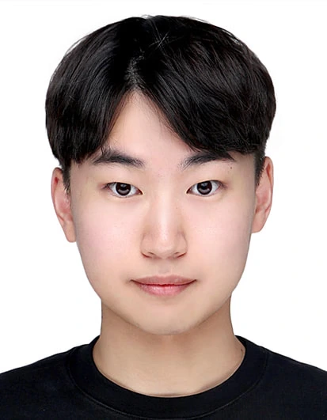
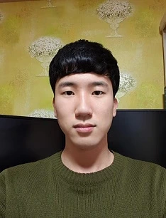
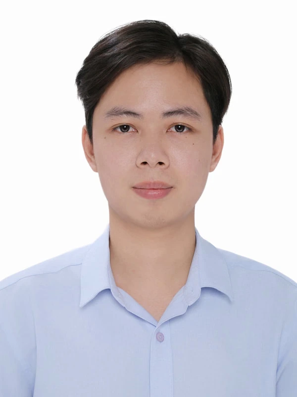
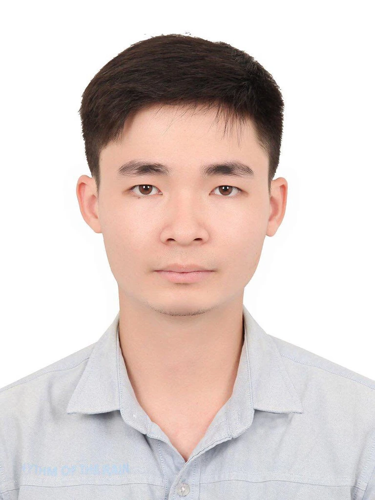
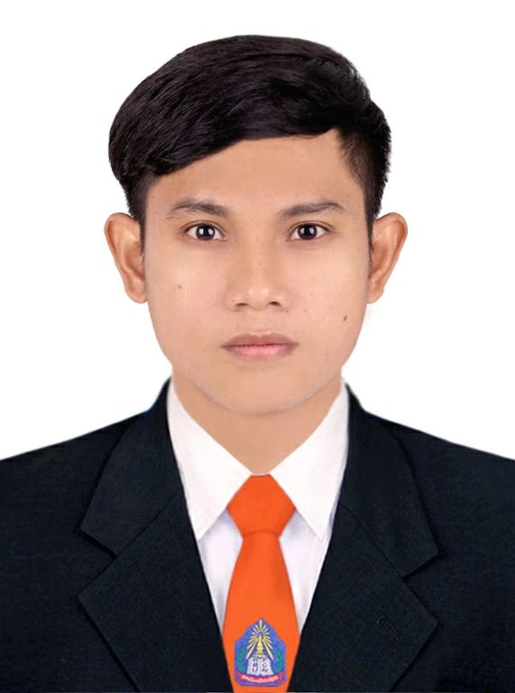
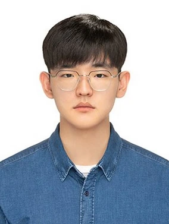
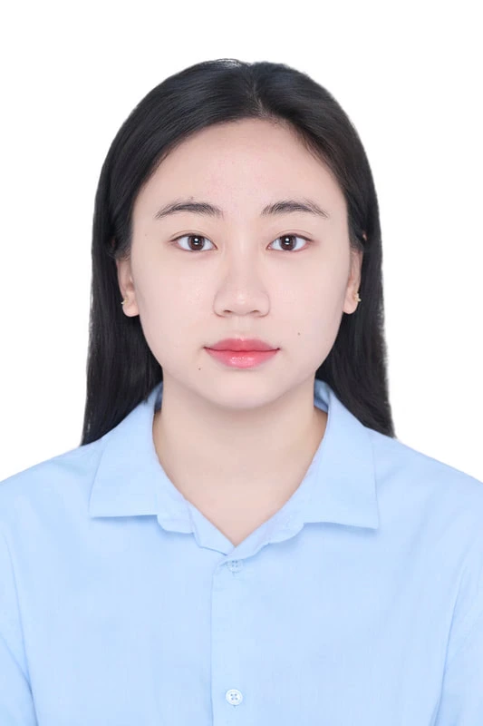
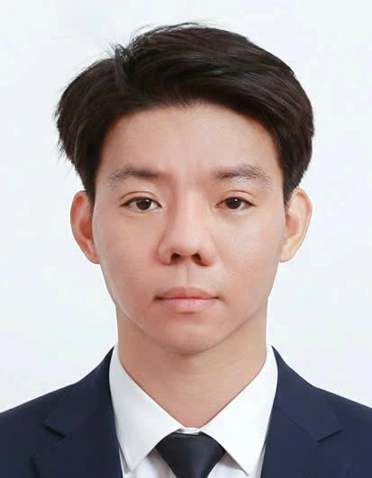
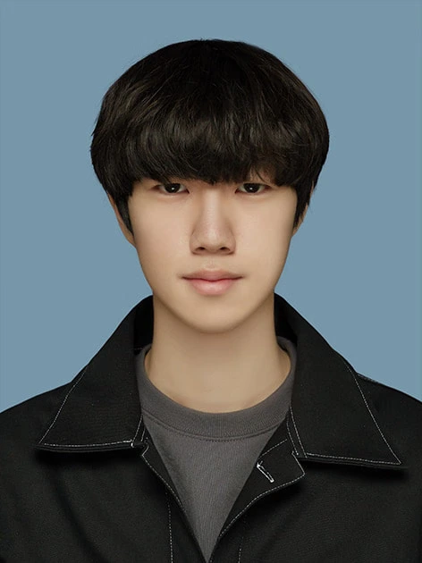

FACULTY
윤형철 Hyungchul "Henry" Yoon
ACADEMIC CAREER
2026.09 ~ Professor, School of Civil, Environmental and Architectural Engineering, College of Engineering, Korea University
2025.10 ~ 2026.09 Professor, School of Civil Engineering, Chungbuk National University
2020.10 ~ 2025.09 Associate Professor, School of Civil Engineering, Chungbuk National University
2018.03 ~ 2020.09 Assistant Professor, School of Civil Engineering, Chungbuk National University
2016.08 ~ 2018.02 Assistant Professor, Department of Civil and Environmental Engineering, Michigan Tech
GRADUATE STUDENTS
이재혁 JaeHyuk Lee
Post-doctoral Researcher, SSL
Ph.D. Civil Engineering, Chungbuk National University (2026)
Researcher, Korean Institute of Geoscience and Mineral Resources (2021)
Research Assistance, SSL (2018 - 2021)
M.S. Civil Engineering, Chungbuk National University, 2021
B.S. Civil Engineering, Chungbuk National University, 2020
Email: bksro1254@naver.com

박영서 Yeongseo Park
Research Assistance
M.S. Civil Engineering, Chungbuk National University, 2025
B.S. Civil Engineering, Chungbuk National University, 2025
Email: 1023syp@chungbuk.ac.kr

전건열 GeonYeol Jeon
Ph.D Student
Research Assistance, SSL (2019 - 2023)
M.S. Civil Engineering, Chungbuk National University, 2022
B.S. Civil Engineering, Chungbuk National University, 2020
Email: rjsduf1111@naver.com
이건희 GeonHee Lee
Ph.D Student
Research Assistance, SSL (2019 - 2022)
M.S. Disaster Prevention Engineering, Chungbuk National University, 2022
B.S. Civil Engineering, Chungbuk National University, 2020
Email: korrjdgml@daum.net

원준신 Xuan Tinh Nguyen
Ph.D Student, Co-supervisor: Prof. Euijong Lee (CBNU), Prof. Ji-Hoon Jeong (SKKU)
M.S. Civil Engineering, Chungbuk National University, 2025
B.S. Computer Science, Ho Chi Minh City University of Education, 2022
Email: xngtinh@gmail.com

임팔재 Phat Tai Lam
Ph.D Student, Co-supervisor: Prof. Euijong Lee (CBNU), Prof. Ji-Hoon Jeong (SKKU)
M.S. Civil Engineering, Chungbuk National University, 2025
B.S. Computer Science, Ho Chi Minh City University of Education, 2023
Email: lamtai2105@gmail.com

쏙 쌈밧 Sok Sambath
Master Student
B.S. Building Technology, National University Of Laos, 2022
Email: sambathsok506@yahoo.com

유동균 DongKyun Yoo
Master Student
B.S. Digital Security, Cheongju University, 2025
B.A International Studies - English Major, Seowon University, Mar. 2020 – Dec. 2021
Email: jamie6380@naver.com

Minh Anh Dang
Master Student
B.S. Management Information Systems, Hanoi University of Science and Technology, 2023
Email: minhanh.dang0612@gmail.com

Duy Hoang Anh Nguyen
Master Student
B.S. Civil Engineering, University of Transport and Communications, Vietnam, 2021
Email: ndhoanganh.research@gmail.com

유정훈 Junghoon Yu
Master Student
B.S. Civil Engineering, Chungbuk National University, 2026
Email: civilyu01@chungbuk.ac.kr